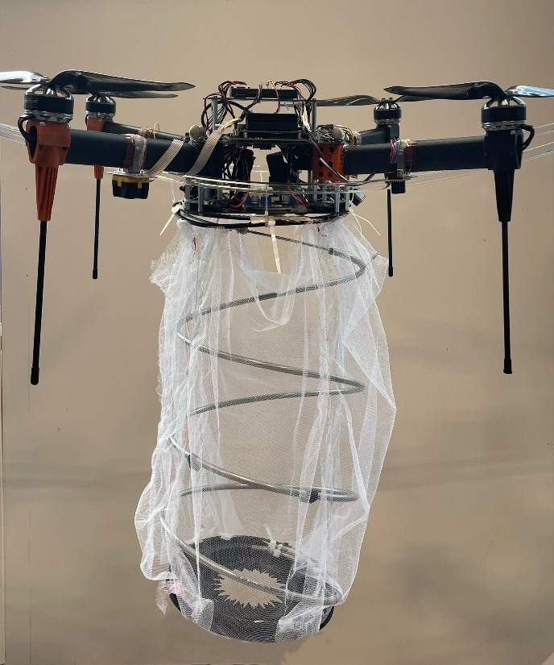

<!-- <!DOCTYPE html>
<html lang="en">
<head>
  <meta charset="UTF-8">
  <title>Optical Flow Drone Project</title>
  <link rel="stylesheet" href="styles.css">
</head>
<body>

  <h1>Autonomous Drone for Water Debris Collection</h1>
  <h2>Bio-Inspired Altitude Control Using Optical Flow</h2>

  <h3>What's the Project About?</h3>
  <p>
    I designed and built an autonomous drone that collects surface debris from water bodies—think floating trash in lakes or ponds.
    But what makes it special is how it lands. Instead of using expensive range sensors, this drone uses a camera and a technique
    inspired by how insects land: <strong>optical flow</strong>.
  </p>

  
  <p style="text-align: center;">Figure 18: Hexsoon-650 drone platform customised to house onboard electronics and soft grasper.</p>

  <h3>What Is Optical Flow?</h3>
  <p>
    Optical flow is the pattern of motion you see when objects move past you. Imagine sticking your head out of a moving car—
    you’ll see everything rushing past. That’s optical flow. This drone uses visual motion to estimate how quickly it’s approaching
    the ground. When the image movement becomes unstable, it knows it’s close enough to land safely.
  </p>
  <p>
    This mimics how bees land: they don’t measure exact height but infer it from how fast the ground appears to move—
    a concept known as <strong>time-to-contact</strong>.
  </p>

  <h3>🚁 System Overview</h3>
  <ul>
    <li><strong>Platform:</strong> Custom-built drone on a Hexsoon-650 frame</li>
    <li><strong>Flight Controller:</strong> Pixhawk 4 (PX4 firmware)</li>
    <li><strong>Computer:</strong> Jetson Nano</li>
    <li><strong>Microcontroller:</strong> Teensy 4.0 (Arduino IDE)</li>
    <li><strong>Software Stack:</strong> ROS2, MAVROS, C++, Python</li>
  </ul>
  <p>
    The onboard electronics and the grasper mechanism were integrated from scratch, with communication between all parts handled via ROS.
  </p>

  
  <p class="caption">Figure 18: Custom drone platform housing onboard electronics and soft grasper mechanism.</p>

  
  <p class="caption">Figure 19: System flowchart showing onboard device connections and communication protocols.</p>

  <h3>🧠 Smart Landing Using Optical Flow Divergence</h3>
  <p>
    The drone maintains a constant optical flow divergence (OFD) value and adjusts its thrust to stabilize that value.
    When instability begins, it knows it’s close to the ground. A decaying gain value makes the controller less aggressive
    during descent, allowing for smooth landings without needing sonar or LIDAR.
  </p>

  
  <p class="caption">Figure 20: Control loop that adjusts gain during descent to enable safe landing.</p>

  
  <p class="caption">Figure 21: Oscillations in OFD at various gain levels help estimate altitude.</p>

  <h3>🤖 Soft Grasper with Mechanical Iris</h3>
  <p>
    The drone’s grasper uses a motorized helical tendon to contract and close in a flower-like fashion.
    The mechanical iris ensures a smooth and symmetric closure, ideal for collecting floating debris.
    The grasp is triggered using time-to-contact cues derived from optical flow.
  </p>

  
  <p class="caption">Figure 22: 3D printed mechanical iris for grasping debris.</p>

  
  <p class="caption">Figure 23: Assembled iris and grasper mechanism mounted on drone.</p>

  <h3>🔮 Why Does This Matter?</h3>
  <p>
    This project showcases how <strong>bio-inspired vision systems</strong> can solve real-world problems
    with minimal sensors and hardware. The same approach can be scaled to autonomous robots operating in
    GPS-denied or resource-limited environments. It’s a step toward affordable, adaptive systems that
    "see" the world like insects—reacting quickly, efficiently, and intelligently.
  </p>

</body>
</html> -->
